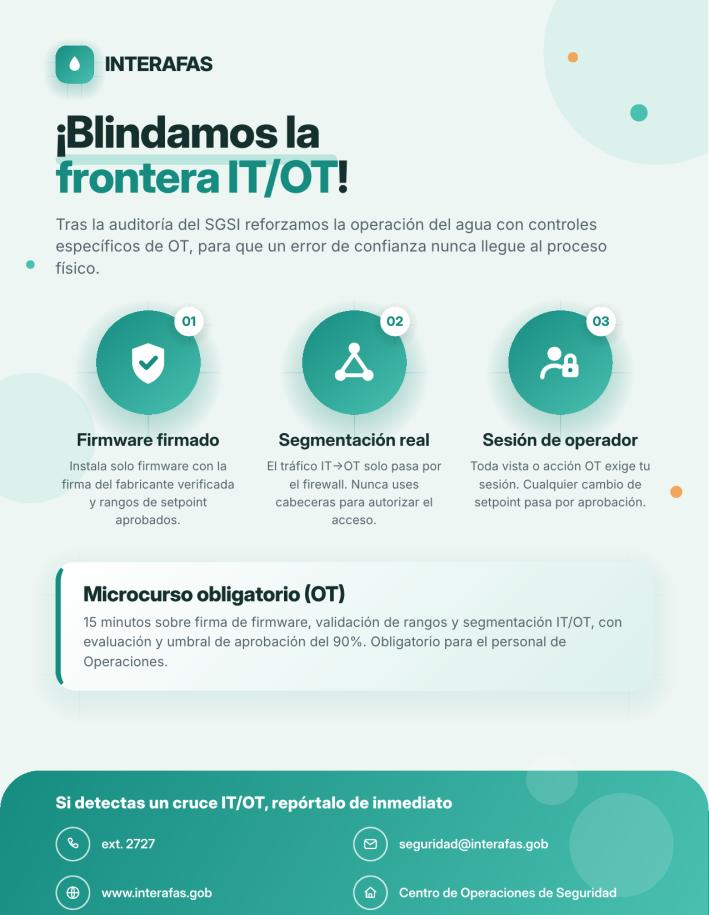

INTERAFAS-LAB: del hallazgo a la gestión del riesgo
20 vulnerabilidades encadenadas hasta tomar el control de un proceso crítico de agua, y los cuatro documentos con los que una organización real respondería: qué se rompió, por qué, y cómo se gestiona, se contiene y se comunica.
I. Sobre el proyecto
INTERAFAS-LAB simula un organismo operador de agua metropolitano: un portal ciudadano (expedientes, pagos, proveedores), una API interna y una zona de operaciones industriales (OT) que representa el proceso real de distribución de agua. El ejercicio consistió en evaluar su seguridad ofensiva hasta comprobar, bandera por bandera, 20 vulnerabilidades reales, y después construir, a partir de esos mismos hallazgos, el sistema de gestión que una organización necesitaría para prevenir, responder y comunicar un incidente así.
Los hallazgos no son incidentes aislados: se encadenan. Exposiciones de información "menores" revelan la arquitectura interna; fallas de autorización dan acceso a datos ajenos; inyección y manipulación de lógica de negocio comprometen sesión y pagos; y, al final, la confianza mal ubicada en una cabecera y en un paquete de firmware sin firma cruza la frontera entre TI y OT hasta alterar un parámetro físico del proceso.
II. Retos enfrentados
Lo más difícil no fue encontrar una vulnerabilidad aislada, sino lo que exigió cada tipo de hallazgo y, después, traducirlo en cuatro documentos consistentes entre sí.
Pensar en cadena, no en lista
Entender que una fuga "media" (como revelar el segmento OT) solo importa porque habilita, varios pasos después, el impacto crítico. Hubo que priorizar la ruta completa, no cada hallazgo por separado.
Inferencia sin salida directa
La inyección SQL ciega (07) no devolvía datos: hubo que reconstruir cada carácter del token por comparación booleana, un proceso lento que exigió método y paciencia.
La frontera IT/OT es solo confianza
Cruzar de la red corporativa al proceso de agua no requirió un exploit sofisticado: bastó falsificar una cabecera que el servidor jamás debió creer. Fue el reto más revelador del ejercicio.
Traducir técnico a negocio
Explicar un IDOR o un XSS almacenado como riesgo operativo, legal y reputacional —para el SGSI, el PRI y el Plan de Comunicación— fue un ejercicio distinto al pentest: mismo hecho, audiencia y lenguaje diferentes.
Mantener los cuatro documentos alineados
Los mismos 20 hallazgos aparecen en el SGSI (como riesgos), en el PRI (como playbooks) y en el Plan de Crisis (como escenario reputacional); cuidar que no se contradijeran entre sí fue un trabajo aparte.
III. Las 20 banderas
Cada reto se resolvió hasta obtener su marcador (bandera) como prueba de explotación. Haz clic en cualquier captura para verla en grande.
Fase 1Reconocimiento y exposición

Archivo público olvidado. Se navegó /assets/docs/public/, se descargó el paquete de despliegue y se leyó release-check.env con el token expuesto.
UPSLP_CNOIV-OPEN-DOOR-01

Información sensible en el cliente. Se revisó el JavaScript del cliente, se halló la referencia a build-manifest.php y se consultó directamente sin autenticación.
UPSLP_CNOIV-LOOK-CLOSER-02

Respaldo expuesto. Se solicitó transparencia.php.bak y el servidor lo sirvió como texto plano, revelando el código fuente PHP.
UPSLP_CNOIV-OLD-MEMORIES-04

Divulgación por errores. Se forzó una excepción con un valor fuera de rango y la página de error, con DEBUG activo, mostró rutas y base de datos.
UPSLP_CNOIV-TOO-MUCH-INFO-05

Fuga de arquitectura interna. infrastructure-status.php reveló el segmento de red OT, el gateway RTU-GW-07 y su ruta de acceso.
UPSLP_CNOIV-BEHIND-THE-DESK-15
Fase 2Acceso y autorización

Referencia insegura a objetos (IDOR). Ya autenticada, se cambió el id del expediente a uno ajeno (id=2) y el sistema lo mostró sin verificar al dueño.
UPSLP_CNOIV-NOT-YOURS-03

Control de acceso por rol deficiente. Se editó la cookie portal_role a procurement_admin desde DevTools y se ejecutó una acción administrativa.
UPSLP_CNOIV-WRONG-ROLE-06

Endpoint no documentado. account-context.php reveló en su JSON un enlace interno (links.history) hacia un endpoint que nunca se documentó.
UPSLP_CNOIV-HIDDEN-HISTORY-11

Autorización deficiente en API (BOLA). Se cambió el parámetro account del endpoint a una cuenta ajena y la API devolvió su historial completo.
UPSLP_CNOIV-SECOND-ACCOUNT-12
Fase 3Explotación técnica

SQL Injection ciega. Sin salida directa, se usó un oráculo booleano en el parámetro ref y búsqueda binaria carácter a carácter para extraer el token.
UPSLP_CNOIV-SILENT-ANSWER-07

Entrada persistente insegura (XSS). Se insertó un script en la descripción de un reporte ciudadano; se ejecutó al visualizarse el reporte.
UPSLP_CNOIV-STORED-WORDS-08

Path traversal. Se manipuló el parámetro file con secuencias ../ repetidas hasta leer /etc/motd fuera del directorio permitido.
UPSLP_CNOIV-TOO-DEEP-09

Gestión débil de sesión. Reutilizando el traversal anterior se leyó includes/config.php, exponiendo los secretos de sesión de la aplicación.
UPSLP_CNOIV-WHO-ARE-YOU-10
Fase 4Abuso de lógica de negocio

Abuso de lógica de negocio en pagos. Se envió un pago con la factura y la cuenta de un tercero; el servidor lo procesó sin validar la titularidad.
UPSLP_CNOIV-PAYMENT-PATH-13

Vínculo proveedor-contrato no validado. Se combinó un contract_id y un provider_id sin relación real entre sí, y el servicio aceptó la combinación.
UPSLP_CNOIV-TRUSTED-SUPPLIER-14
Fase 5Cruce IT → OT

Cruce indebido IT → OT. Se falsificó el encabezado X-Forwarded-For con la IP del segmento OT revelado antes, y se accedió al gateway operacional.
UPSLP_CNOIV-BEYOND-THE-WEB-16

Vista HMI sin autenticación. Se consultó telemetry.php directamente, sin sesión de operador, y devolvió el estado completo del proceso de agua.
UPSLP_CNOIV-EYES-ON-THE-PLANT-17
Fase 6Compromiso OT y impacto

Firmware sin firma del emisor. Se crackeó una contraseña (hash SHA-1) y se instaló un paquete de firmware modificado que pasó la verificación de integridad sin firma.
UPSLP_CNOIV-TRUST-THE-PACKAGE-18

Cadena de dependencias IT → OT. Se recorrieron 6 saltos de activos (gateway → PLC → ... → zona) porque el servidor no aplicaba ningún límite de autorización.
UPSLP_CNOIV-CHAIN-REACTION-19

Impacto operacional final. Se cambió el parámetro pressure_setpoint_bar de 4.2 a 9.9 sin validación de rango, desencadenando una cascada de 5 etapas hasta el estado catastrófico.
UPSLP_CNOIV-NOW-YOU-CONTROL-20
IV. Documentos del proyecto
Los cuatro entregables, construidos a partir de los mismos 20 hallazgos, más el log del laboratorio como evidencia de haberlo resuelto.
Informe de Seguridad Ofensiva
Las 20 vulnerabilidades, su cadena de ataque y mitigaciones
Descargar PDFSGSI · ISO/IEC 27001
Activos, políticas, matriz de riesgos y mejora continua
Descargar PDFPlan de Respuesta ante Incidentes
Roles, fases de respuesta y seis playbooks operativos
Descargar PDFPlan de Comunicación de Crisis
Vocería, mensajes por etapa y manejo de desinformación
Descargar PDFLog del laboratorio
Bitácora de banderas (CSV): evidencia de haber resuelto INTERAFAS-LAB
Descargar CSVV. Flyer de concientización
A partir de la matriz de riesgos del SGSI se diseñó un flyer con los hábitos seguros que previenen los hallazgos del laboratorio. Tras la auditoría interna (Sección 10 del SGSI), se rediseñó con un mensaje específico sobre la frontera IT/OT, el eslabón que terminó habilitando el impacto catastrófico.


VI. Conclusión
Las 20 vulnerabilidades confirman que la seguridad del entorno falla de manera sistémica y no puntual: los mismos errores de diseño —confiar en datos del cliente, no verificar la propiedad de los objetos, y verificar integridad pero no autenticidad— se repiten en distintos módulos y escalan de severidad conforme se acercan al entorno operacional.
El hallazgo decisivo no fue el de mayor peso individual, sino la continuidad de la cadena: una fuga de arquitectura clasificada como media es la que, encadenada con la confianza en cabeceras y en firmware no firmado, hace posible el impacto catastrófico. Por eso la remediación —y los cuatro documentos de este proyecto— priorizan los límites de confianza (segmentación real, firma de firmware, autorización del lado del servidor) por encima de corregir vulnerabilidades de forma aislada. Ninguna medida sola basta: se necesita defensa en profundidad, un plan de respuesta que ya sepa qué hacer, y una forma de comunicarlo sin empeorar la crisis.